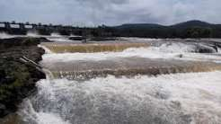

Khadakwasla Dam is a historic embankment dam on the Mutha River, located about 20 km from Pune's city center. Built in 1879, it forms the Khadakwasla Lake, which serves as the primary water source for Pune and its suburbs. It is a popular local picnic spot and sunset viewpoint.
